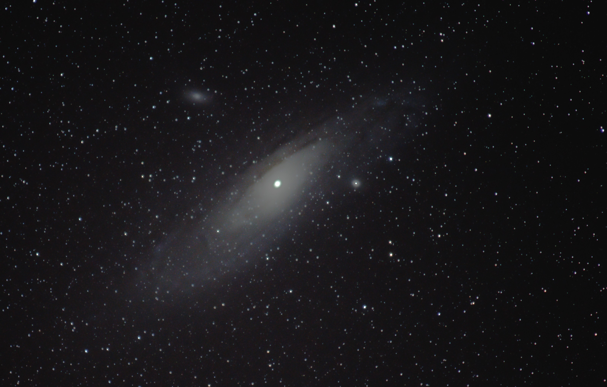

|
M8 and M20, The Lagoon and The Trifid Nebulea, are two nebulae near the core of the Milkyway in Sagittarius. |
|  |
M31, The Andromeda Galaxy, is the closet regular galaxy to the Milkyway. It is 3.2 million light years away and moving towards us. |
|
M45, The Pleiades, also The Seven Sisters is a close open star cluster that can be seen in the Fall and Winter months. |
 |
Leo Triplet is a group of 3 galaxies that are individually known as M66,M65, and NGC3628. These galaxies are located in the Leo below the rear of the Lion. |